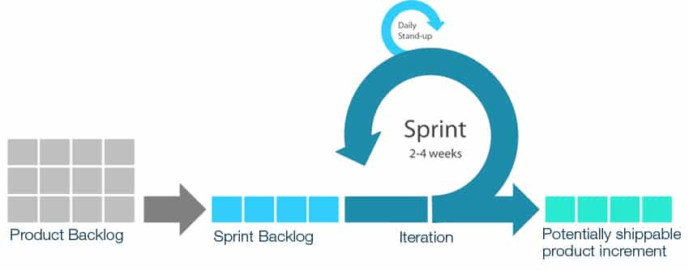

SCRUM Information
What is Scrum?
Scrum is an agile form of software development that involves spreading out each part of the software into small and quick tasks and then performing them in "sprints"
The main appeal to Scrum is how it enables the development cycles and teams to work closely together and be fully aware of everything that's being worked on, which further promotes close and tight-knit teamwork.
What is Agile Development?
Agile development is the term used to differentiate it from the classic "waterfall" development which is a top-down development cycle that is known for causing delays due to how the project goes through its stages. It's been proven to be slower and lacking in versatility.
Agile Development is at it's core for quick processes individualized and compartmentalized for a faster and quicker development cycle, they are known for being fluid and open for daily iterations and updates to the project being worked on.
Waterfall development model example:

What are the benefits to using Scrum?
- Overview!
- Commitment
- Fast paced
- Light and small
- Scrum has meetings regularly where team members provide info on their process. As well as before every sprint.
- Due to everyone everyone being informed everyone is able to commit to each other and themselves the project with a clearer vision.
- splitting all tasks into smaller compartments of work makes it so potentially the best one to do it, is able to do it.
- Scrum is made for smaller teams working closely, while it does scale, the core of it remains designed for smaller teams.
How does Scrum work exactly?
Scrum, being agile works in the sense of